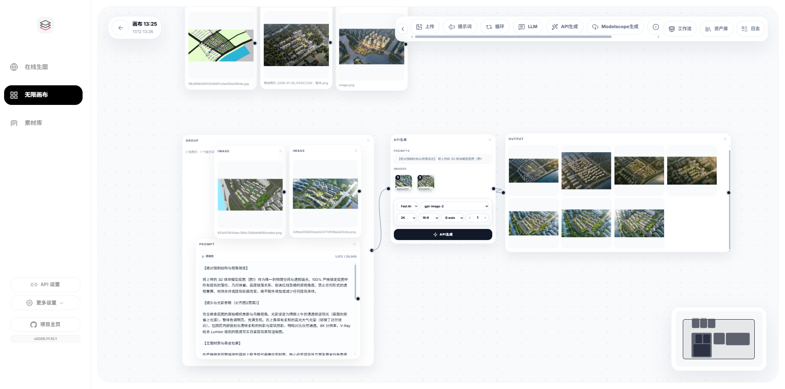

等待生成
从一张总平面，到一组鸟瞰效果图
无限画布是跑在你电脑上的 AI 创作工作台。双击启动，断网也能用，素材和 Key 都留在本机。
下载 Windows 绿色包向下滚动，镜头会带你走完整条流程
免装 Python断网可启动约 50 MB
先放进参考图
总平面、现状照片、风格参考，都摆在画布上。
1–9 张参考图，每张自带 IMAGE 编号，写提示词时直接指代。
再写清楚要什么
指哪张，就写哪张。
提示词里用编号指代参考图，把视角、光影、材质分段写清楚，长度上限 20,000 字。
选模型，点生成
想到哪一步，就从哪一步接。
在节点里选接口、模型、分辨率和画幅。文生图、图生图、局部重绘、扩展出图、九宫格多视角，都在同一张画布上完成。
结果落在画布上
一次出多张，直接挑。
输出节点把结果一次排开，可以继续连线做下一轮，也能归入素材库。